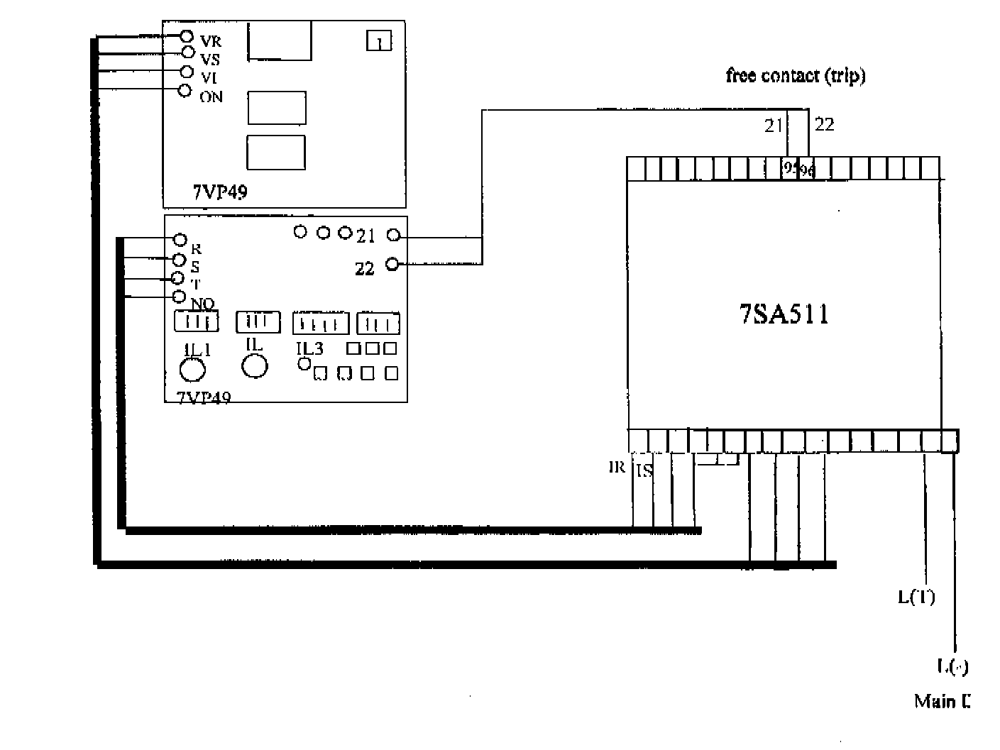

| Protection |
Distance Relay
7SA511
Siemens
Issued to: Helwaan
Using Siemens test set 7VP48, 7VP49
Date Approved: 29 Dec 1996
Date to be Reviewed:
Dec 2001|
|
|
|||
| Equipment: Distance Relay 7SA511 Siemens |
Document No.: DsR-038-r0 | |||
|
Issued to: Helwaan |
||||
| Status: APPROVED | ||||
| Procedure: Using Siemens test set 7VP48, 7VP49 |
Date Approved: 29 Dec 1996 |
|||
|
Date to be Reviewed: Dec 2001 |
||||
Introduction
This procedure details the steps required to completely check the proper operation and calibration of the 7SA511 distance relay. It is recommended this procedure be carried out on a yearly bases. This work be carried out section of this document is divided into 3 sections.
The first preliminary steps to prepare for relay testing describes the activities required prior to testing. Some of these steps could be performed days before the actual test. The second section Preparation for testing describes the steps to set up the equipment for performing the actual tests. The third section is the actual test.
The document is formatted the way to minimize the possibility of error causing personal injury or damage to equipment.
The first draft initialed & tested by eng. Abdel Azeez Mohamed at 29 Dec 1997 at Network training center.
Safety Precautions
A work permit must be issued, qualified maintenance staff carry the suitable safety ID category,
Safety fence with caution marks surrounding the work area is required,
Tools and Equipment
Work to be Carried Out
Preliminary Steps to Prepare for Relay Testing
Breaker trip coils.
Breaker failure scheme associated with this relay.
Disturbance alarms and fault recorder associated with this relay.
Testing the Relay and Protection Outputs
Prior to Starting Testing Procedure (s) Ensure the Following Steps
Preparations
Testing Procedure (s)
Zone 1 Test
For Phase To Earth
Phase To Phase
V= 1 ( X + X )
for angle 90
Phase To Earth Test
Phase To Phase
|
Angle |
|
L1 - E |
L2-E |
L3-E |
L1-L2 |
L2-L3 |
L3-L1 |
|
0 |
THER. |
|
|
|
|
|
|
|
MEAS. |
|
|
|
|
|
|
|
|
90 |
THER. |
|
|
|
|
|
|
|
MEAS. |
|
Test Sheet 1 (Zone 1 Test Results)
Zone 2 Test
To test zone 2, block the timer of zone 3 and zone 4 and other functions by a computer or the keyboard on the relay.
Calculate the operating voltages for zone 2 by the equations in step 8
Phase to Earth Test
Repeat the above test from step 1 to step 10
and record the results in Test Sheet 2
Phase to Phase Test
Repeat the above test from step 1 to step 12 and record the results
in Test Sheet 2.
Angle
L1 - E
L2-E
L3-E
L1-L2 L2-L3 L3-L1
0 THER.
MEAS.
90
THER.
MEAS. Test Sheet 2 Zone 2 Test Results Zone 3 Test To test zone 3, block the timer of zone 4 and other functions by a computer
or the Calculate the operating voltages for zone 3 by the equations instep 8 Page
2. Phase To Earth Test
keyboard on the relay.
Sheet 3.
Phase To Phase Test
Repeat the above test from step 1 to step 12 Pages 3, 4 and record the results in Test Sheet 3.|
Angle |
|
L1 - E |
L2-E |
L3-E |
L1-L2 |
L2-L3 |
L3-L1 |
|
0 |
THER. |
|
|
|
|
|
|
|
MEAS. |
|
|
|
|
|
|
|
|
90 |
THER. |
|
|
|
|
|
|
|
MEAS. |
|
|
|
|
|
|
Test Sheet 3 (Zone 3 Test Results)
Zone 4 Test
It is not necessary to block the timer of any zones
Calculate the operating voltages for zone 4 by the equations in step 8 Page 2.
Phase To Earth Test
Repeat the above test from step 1 to step 10 and record the results
in Test Sheet 4.
Phase To Phase Test
Repeat the above test from step 1 to step 12 and record the
results in test sheet 4.
Angle L1 - E L2-E L3-E L1-L2 L2-L3 L3-L1
0 THER.
MEAS.
90 THER.
MEAS.
0 THER.
MEAS.
90
THER.
MEAS.
Test Sheet 4 (Zone 4 Test Results)
Time Test for All Zones
To measure the zone 1 time, set the tester to an impedance value equal to half the zone impedance value and a phase angle of 90 degrees.
To measure the zone 2 time, set the tester to an impedance value equal to ( Z1+ (Z2 –Z1)/2 ) and a phase angle of 90 degrees.
To measure the zone 3 time, set the tester to an impedance value equal to (Z2+ (Z3 –Z2)/2) and a phase angle of 90 degrees.
Prepare the Relay for Service
Rest all function on the relay 7SA511 by pressing reset on the keyboard of the relay.
Return Relay and Associated Equipment to Service
Return relay to service by removing the test leads from the relay terminals block and the test set.
Make sure CT and VT secondary circuits are in normal condition.
If any equipment associated with the relay has been isolated, it should be returned to service by the following restoration steps
Breaker trip coils.
Breaker failure scheme associated this relay.
Disturbance alarm and fault recorder associated with this relay.
Request Power Line be returned to Service
Take crossed reading of all AC currents and voltages supplied to the relay and compare them to those for normal load condition.
Check that readings agree with station meters (MW/MVAR/Power factor/Ampere/Voltages).
Place a copy of the test results in the field maintenance file.

Location: Equipment
Designation:
Tested
by:
Signature:
Test Date:
Approved by:
Signature:
Test Date: